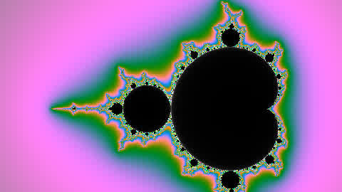

גלריית מהלכים שבודקת את המכניקה ולא את הטעם.
כל סקשן כאן מריץ מתכון אחד מתוך references/moves-recipes.md, עם הגרסה שלו למובייל ולהפחתת תנועה.
שורות שעולות מאחורי הקצה של עצמן, אחרי שהפונט נטען.

משפט שנקרא לאט מקבל את הזמן שלו: כל מילה מתמלאת בדיו בקצב הגלילה, והמילה האחרונה מסומנת.
H-01 text-swap stage (sticky, no pin)
משפט ראשון על הבמה.
משפט שני מחליף אותו.
והשלישי סוגר את הרעיון.
01 / 03
H-02 horizontal track (sticky + translate, reading direction aware)
01
02
03
04
05
06
פריים אחרי פריים, בקצב של מי שגולל.
והתנועה נעצרת כשהגלילה נעצרת.
שלב ראשון
המספר בצד מתגלגל לשלב שחוצה את אמצע המסך.
שלב שני
גם בגלילה מהירה המספר תמיד תואם את השלב שעל המסך.
שלב שלישי
השלב הפעיל מחושב מהמיקום בכל עדכון, לא מאירועי כניסה ויציאה.
312
בוגרים מאז 2019, לפי רשימת הקורסים. המספר האמיתי כתוב ב-HTML, והספירה מתחילה מאפס רק כש-JS רץ.